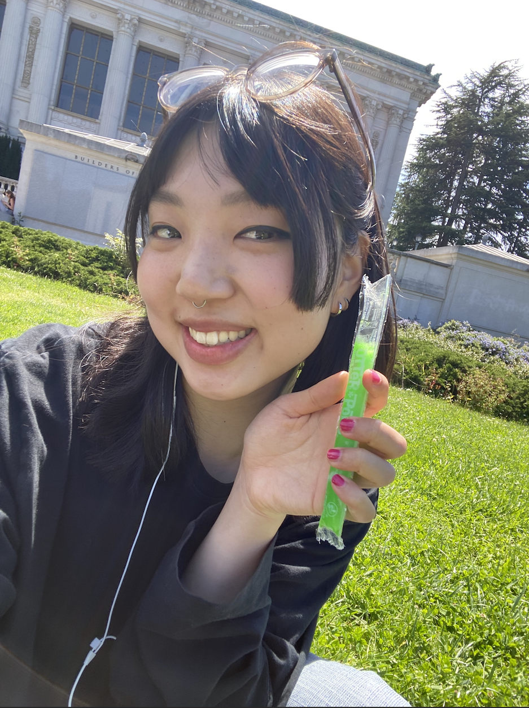
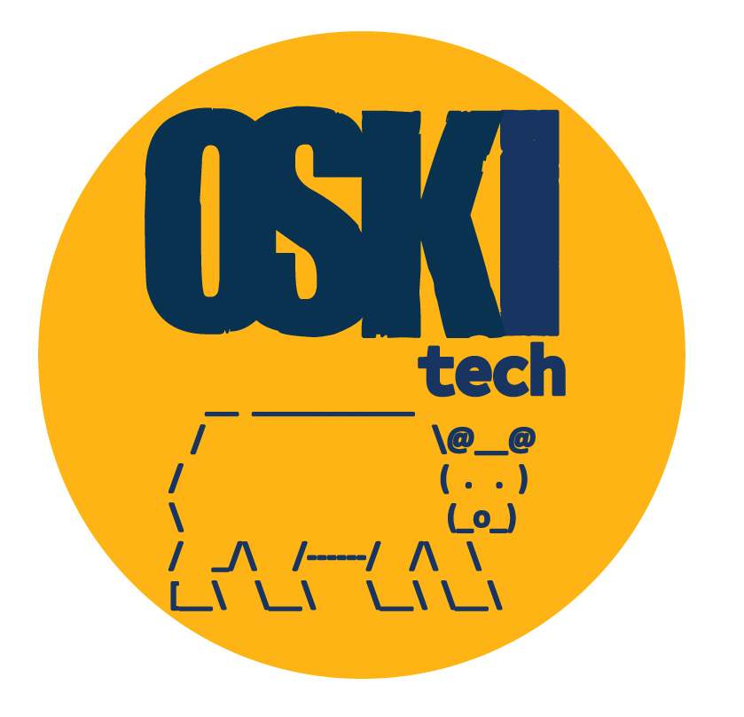

|  |
Kelsey Choe
Bachelor of Arts in Media Studies with a Concentration in Digital Studies, Minor in STS with emphasis in Human Contexts of Data and Computing
Design Portfolio
Doodle/Art Instagram
Writing Portfolio
Above are links to my art account and a portfolio of my illustrations for the Daily Californian. I also worked with composition and layout in the design process. I also have a writing portfolio where I add in papers I authored that I am proud of. My art Instagram is where you will get a sense of my personal self through art.
|
Interest in Design and Digital Communications My journey in design and digital humanities has been marked by a deep engagement with digital pedagogy, technology accessibility, and innovative project design, reflecting my commitment to blending creativity with technological solutions.
About Me: Kelsey received her undergrad degree in Digital Media Studies and an STS (Science, Technology, Society) minor. Working at both OSKI Tech and Berkeley School of Education's 'Immersive Virtual Classroom' research for innovative technology in higher education, she has built a passion for collaborative research and innovative tech. Kelsey hopes to work on creative technological solutions for the possibilities of learning, toward a future where technology skills are accessible and justly implemented.
Professional Experience
-
O@BSE Immersive Virtual Classroom, UC Berkeley - As a researcher for the Online @ Berkeley School of Education team, I studied technology's impact on learning experiences, applying my skills in instructional design and innovative software. Here, I demonstrated my skills in workplace responsibility and lead research by setting up and facilitating focus groups of Berkeley students. I presented our research findings at the Center for Teaching and Learning Conference and authored a Research proposal for the Online Learning Consortium. Student Research Assistant, Immersive Virtual Classroom
-
URAP School of Information, UC Berkeley - Participated in a research project where we used cultural analytics methods to measure diversity in film, applying qualitative analysis and grounded theory approaches to create datasets, contributing to the creation of NLP machine learning algorithms that could piece thematic language to tags.
-
Design Team Illustrator, The Daily Californian - Contributed to the visual storytelling of the university's newspaper through digital illustrations, enhancing article engagement and reader experience. Here, I gained skills in strong visual communication through illustration and design.

Highlighted Project: OSKI Tech
Taken on as a student researcher in the OSKI Tech Initiative at the Berkeley Center for New Media, focusing on open skills and knowledge in technology education. My role involved leading survey designs, conducting literature reviews on digital pedagogy, and facilitating technology workshops, aiming to bridge the gap in technology education and accessibility.
Personal Statement
As a student researcher, my academic and project engagements have been centered around leveraging digital media research methods to address and illuminate the nuances of educational experiences, particularly within virtual classroom settings. My expertise encompasses a broad spectrum of skills including user experience design, understanding theoretical social presence models in education, data analysis, and survey design. My involvement in grant proposal writing, task and project management, along with focus group studies, has not only honed my organizational skills but also my ability to lead and collaborate effectively.
Skills: Digital technology research, pedagogical design, Adobe PS, Python, CSS/HTML/JSS, 3D photogrammetry, Public Relations and Marketing Communications, Google Sheets and Excel, Excellent writer
Interests: History/Theory of New Media, Digital Communications, DEIBJ and Multicultural History, Archival Research, Turing Machine, Game Design, Coding, Museum Education, Feminist Media Histories, Cybercultures and Cybercommunities, VR/AR